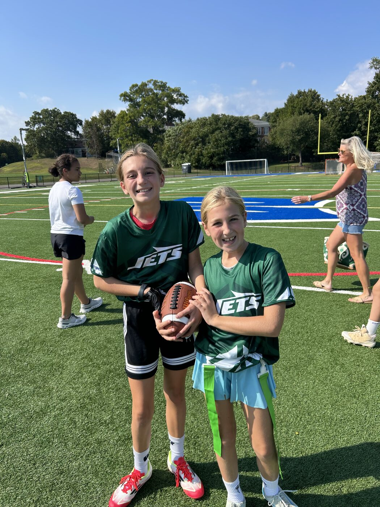
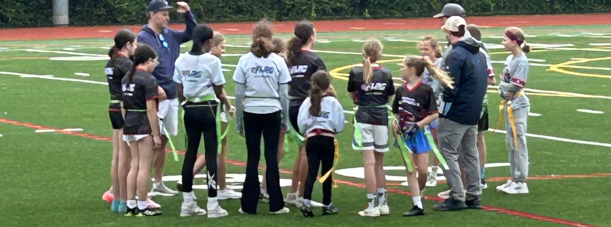

The only girls-specific football program in Westport. NFL-affiliated. Parent-coached with the official NFL Flag curriculum. No experience needed — just bring your energy.
We run the official NFL FLAG program — that means real jerseys you keep, professional refs, and a curriculum backed by the National Football League.
Teams are parent-coached, guided by the official NFL Flag rules and curriculum. It's not a free-for-all — it's structured skill development from coaches invested in their own kids' team.
Monday & Tuesday practices, Sunday games. No 4-night-a-week commitment. Flag football complements your other sports — it doesn't compete with them.
Girls flag football just became a sanctioned high school sport in CT. The pathway from PAL to varsity is opening right now. The girls who start today write the story.
Everything. No hidden fees, no gear to buy separately. Show up ready to play.


Real footage from Westport PAL fields — practices, Sunday games, and a few under the lights.
Girls flag football isn't a side project anymore. It's a sanctioned high school sport in CT, NY, and PA — with NCAA emerging sport status and an Olympic pathway in development. The girls playing at Westport PAL today are ahead of the curve.
Start here. Learn the game, build your crew, find out if you love it.
NFL FLAG Regionals and competitive tournaments for 7–8th graders ready to level up.
Girls flag football is now a sanctioned CT high school sport. The varsity pathway is real.
NCAA emerging sport status. The girls in this program will pioneer something that lasts.
The official youth flag football program of the NFL: 830,000+ athletes and 1,800+ leagues across all 50 states. This is the curriculum WGF runs on.
nflflag.com →NFL clubs approved up to $32M to help launch a new pro flag football league with TMRW Sports — backed by Peyton Manning, Tom Brady, Eli Manning, and more.
Read on NFL.com →NCAA Division I schools are adding varsity women's flag football, with 75+ club teams expected nationwide this year. The recruiting pipeline starts younger every season.
See the teams →CIAC schools including Windsor, Manchester, Southington, and Plainville now field varsity girls flag football teams, with championship games broadcast statewide.
Watch on NFHS Network →Registration is open for Fall 2026. Spots fill fast — especially in the 5–8th grade divisions.
Register at Westport PAL →